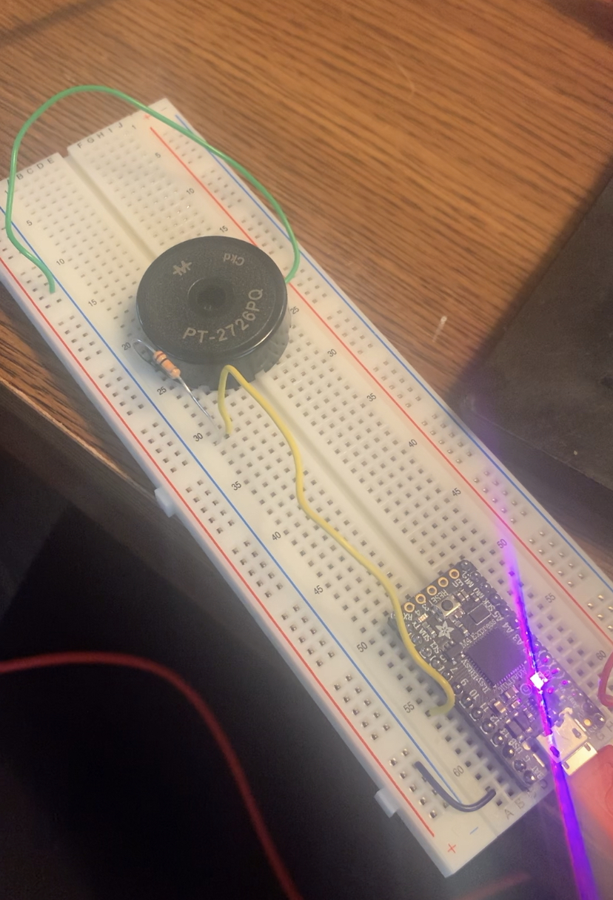
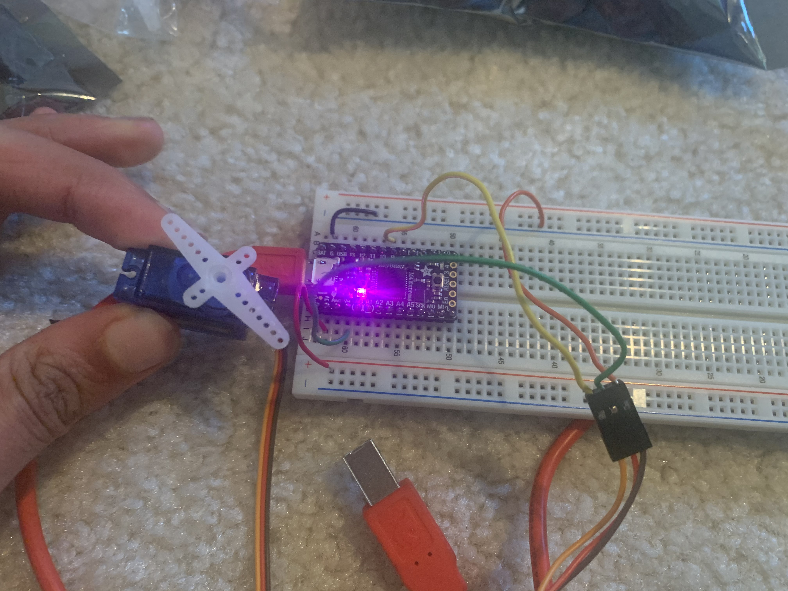

Fun With Output Devices!
Week 7, Output Devices
Turn your volume on! Here's a video snippet of my final project! Let me explain how I got there....
What you see above is the "end result" of my project that involved playing with multiple output devices. Outpute devices are essentially components that do something that you can see, hear, feel, etc. when you tell them to. Examples of these output devices are LEDs, LED Strips, motors, ~fancy motors~ like servo motors, buzzers, and so much more!
Last week, I wanted to program a buzzer to play the YMCA, so I figured that this week, that would be a cool place to start. So, I acquired a Piezo buzzer, and got started
The Hardware
The first thing we have to do correctly is connect the buzzer on a breadboard to your arduino. Buzzers work by essentially inputting voltage from some power source and "modulating" this voltage to create a sound. This is a modulation between high and low voltage, which helps us produce a sound wave, an example of which is shown below. The pitch of the note we hear depends on how fast these modulation occur. This is known as the frequency.

Understanding that we need some means to control input voltage level, it makes sense that we are connecting one side (the positive side) of the buzzer to an output pit on our arduino, through a resistor, and the other side of the buzzer to ground. This circuit is shown below,
The Code
The backbone for the code that you should use for any song you want to play using a piezo buzzer and your itsy bitsy is essentially 1) initialize the buzzer and what arduino pin it is on, 2) define a myTone function that modulates voltage between high and low at some frequency that is inputted into the function, and 3) play notes of this frequency for some certain duration of time.
The hard part is determining what frequencies to play notes at. I decided that I wanted my buzzer to play the YMCA, so the next step was determnining which frequencies to play
I'm a pianist, so I can read sheet music. So, I found a sheet music of the YMCA online. This provided me with the lengths of the notes (I decided one quarter note would be 500 milliseconds).... but wait how do I determine the frequency of the notes?

Each piano note has a different frequency. A good one to know is the A note right above middle C has a frequency of 440 Hz. For the rest of the notes, frequency can be calculated as a function of the number of half steps from this A. Luckily, Wikipedia has a table of all the frequencies of each piano key.
A Table of FrequenciesSo, using this table and the sheet music I was able to code the tune for YMCA into my buzzer. One tip for coding is that if you want the buzzer to play the same note twice in a row, add a delay of around 25 milliseconds in your code and subtract this time from the length of the previous note. Otherwise, the buzzer will play the notes as one continuous long note
And here's the buzzer actually playing the YMCA in circuit!
More Output Devices Yay!
Thursday in class, we spent time talking about other output devices, including motors. One the motors that excited me the most was the Servo Motor, which moves to a certain angle position, instead of just rotating continuously.
To write the code for a servo motor, you need to include the servo library. This provides functions that move the motor to certain positions. The code will send the motor to the position as soon as possible, so if you want the motor to move slower, use a for loop with some delays and a smaller step size for more of a rotation
To attach a servo motor to your arduino, one pin needs to be attached to high voltage, another to an arduino output pin, and the third to ground. Essentially, current flowing through this arduino output pin acts as a gate allowing the servo motor to move, but shuts off once the servo motor gets to the desired position.
My first attempt using a servo motor only attempted to get it to rotate, and here's the result:

Combining Buzzer and Motor
To combine these two lovely output devices, I decided that the servo motor should move to a new position everytime a note is played by the buzzer. I thought this would be a fun dancing-motor to add to the song.
But what should determine what position the motor is sent to? The frequency of the note seemed like a good option! Maybe I could link the movement of the motor directly into the playing of a sound and the degree of the movement could be based on the frequency.
Frequency doesn't correlate exactly to angle, but I realized that my frequencies went between 293 to 793 Hertz and my angle goes between 0 and 180 degrees. This means that the frequency range is 2.72 times larger than the angle range. So, by subtracting the frequency by 293 and dividing it by 2.72, I could map it to an angle degree between 0 and 180. I also realized that this mapping should be the opposite in some sense since the motor moves counter clockwise, and I thought it would look cooler if the motor was able to show the frequency increasing from left to right. So, I mapped the angle as angle = 180 - (frequency - 293)/2.72.
I added a line that would move the servo motor within my myTone function directly, before the voltage modulation starts, so that this motor moves at the same time as the note starts playing
I then made it a cute little frequency meter with a marker and some paper! Check out the final product below :)